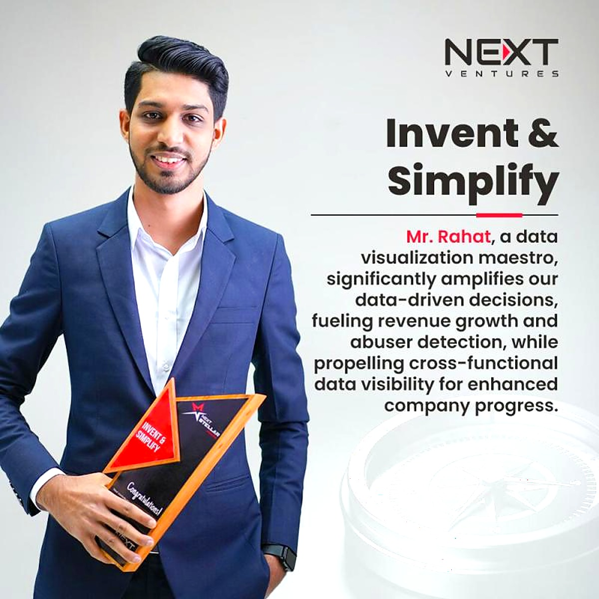
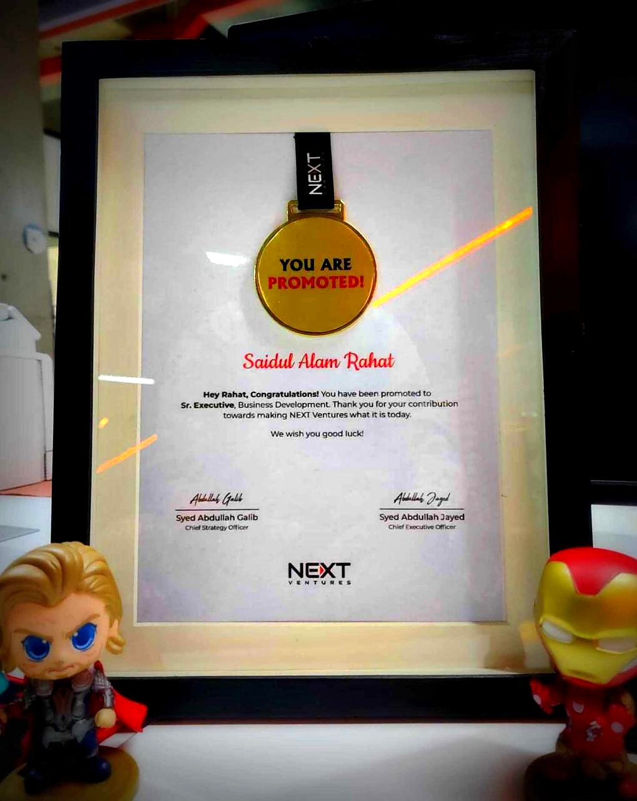
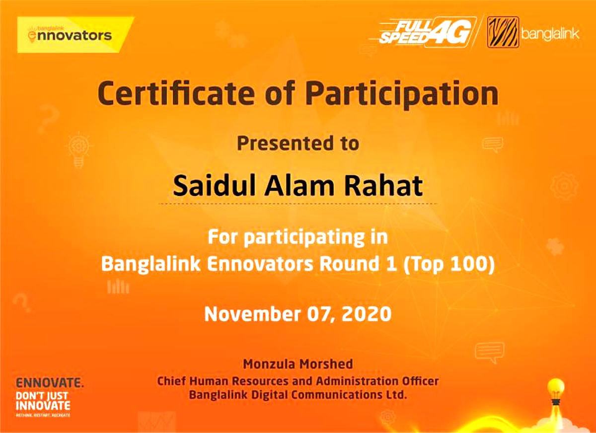
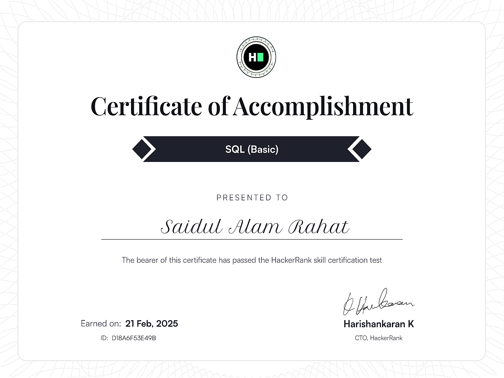
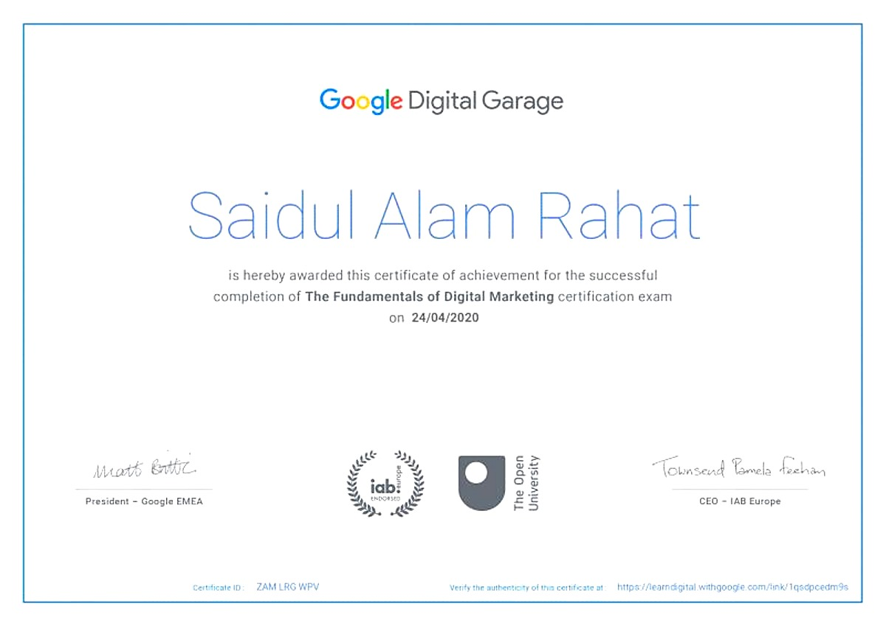
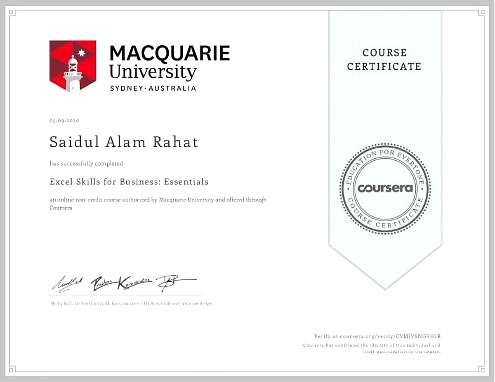
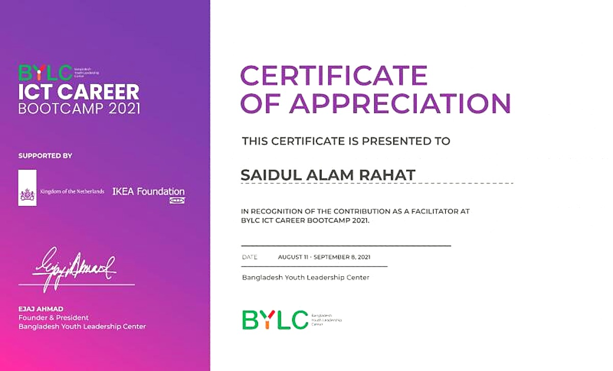

Analytics Engineer at FundedNext with 3+ years of building data tools, automating analytics, and making teams self-sufficient with data. Based in Dhaka, Bangladesh.
"I may lose everything tomorrow, but what's the best thing I can do than trying!"
I'm Saidul Alam Rahat — an Analytics Engineer at FundedNext, one of the world's fastest-growing prop trading firms. I sit at the intersection of data engineering and analytics — building tools, automating pipelines, and designing systems that make teams self-sufficient with data rather than dependent on analysts.
My path wasn't typical. I studied HRM, pivoted through business development, and found my thing in data — specifically the part where you take an ambiguous question like "why did revenue drop?" and turn it into a clear, visual answer that changes how people act.
I've built self-service analytics platforms that cut recurring data requests by 80%, designed custom retention taxonomies adopted as team standards, and created automated alerting systems that catch anomalies before they become problems. Recognized as a "data visualization maestro" by NEXT Ventures with the Invent & Simplify award.
A self-service analytics dashboard that replaced ad-hoc SQL queries for a prop trading firm. 6 purpose-built pages covering core metrics, breach analysis, customer flow tracking, retention taxonomy, business knowledge base, and product update timelines. Automated email alerts catch anomalies before they escalate.
A private-to-public code publishing pipeline. Scans codebases for secrets, schema names, and business terms, builds an anonymization mapping (human-approved), then applies consistent replacements across all files. Supports incremental updates for already-published repos.
Python scraper for extracting structured review data from Trustpilot. Built for competitive analysis and learning web scraping fundamentals.
A collection of small web experiments and creative coding — built for fun and to explore front-end technologies.
Full methodology, framework, and results. 21 pages covering the complete analytical process from raw transaction data to $10.2M in measurable impact.

Recognized by NEXT Ventures as a "data visualization maestro" for significantly amplifying data-driven decisions, fueling revenue growth and abuser detection, while propelling cross-functional data visibility.

Promoted to Sr. Executive, Business Development at NEXT Ventures. Signed by the CSO and CEO for contribution towards making NEXT Ventures what it is today.

Top 100 out of 16,000 participants in the C-Factor Gamification round.
Top 50 out of 300 in an Inter-University MS Excel competition.



